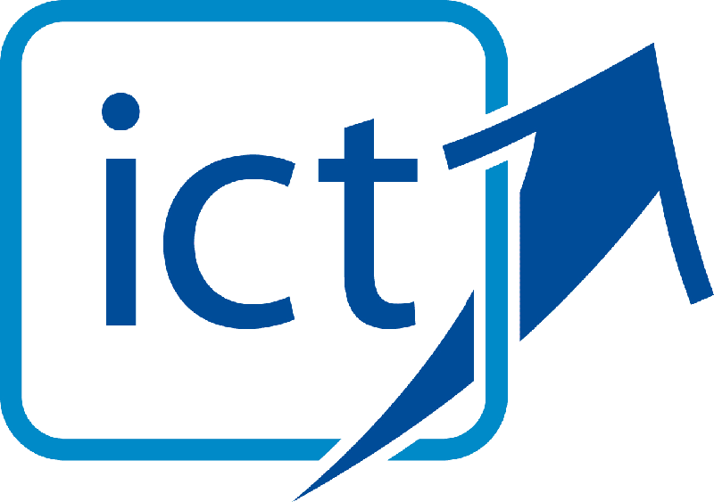

Welcome to the ICT Shared Service Branch
Corporate Services Division
Ensuring that all our clients are receiving the best value for their ICT investments
Our Mandate
The ICT Shared Services Branch is responsible for ensuring that all our clients are receiving the best value for their ICT investments.
Our Mission
To provide customer centered ICT services that: Deliver optimal value at an affordable cost, within acceptable timeframes and with an acceptable level of risk Are a valued and integral part of their business processes, Exploits ICT to its full potential for our clients, Provides ICT solutions leadership and process innovation, Leverages the CobiT framework for process and control guidance. To provide our team members with a healthy, respectful workplace that promotes personal growth and is great place to work.
Our Services
We deliver the following value-added services:
- Information and Communications Technology (ICT) Planning and Investment Services
- Business Architecture and Systems Consulting
- Information Management, Analysis and Reporting Services
- Analysis and Reporting Services include:
- Web Content and Collaboration Services
- Workplace Technology Service Delivery Coordination
Information and Communications Technology (ICT) Planning and Investment Services
- We create the strategic ICT plans that define, with our business stakeholders, the best ICT investments that support the achievement of their desired business outcomes. 
- We develop business cases based on business architectures, requirements, and our solutions research and analysis to recommend the best investments for the department.
- We ensure that the department’s ICT plans provide maximum business value by incorporating process improvement and innovation.
- Our plans will support the department’s role as an agent for change, focused on establishing a value attitude throughout the organization.
Business Architecture and Systems Consulting
- We utilize Business Architecture to capture our business owners’ goals, objectives, strategies, capabilities, and processes to support process improvement efforts and ICT enabled projects.
- We leverage the Business Architecture when working with our business clients to identify and assess their business value streams i.e. the series of process steps that executed to provide the product, service and/or experience they wish to deliver to its clients or stakeholders.
- We work closely with our business stakeholders to identify and exploit opportunities to leverage ICT to enable business transformation and process improvement.
- Our Systems Consulting services involves working closely with our business subject matter experts, BTT and vendor partners to research and implement the ICT investments that they deliver optimal value at an affordable cost and are delivered within acceptable timeframes.
- Our Systems Consulting services also involves organizing and leading ICT investment initiatives on behalf of our clients including the planning, business case development, requirements gathering; solution assessment, and implementation.
Information Management, Analysis and Reporting Services
- Our services address the following aspects of the management of our clients’ information:
- Integrity: Ensuring the accuracy and completeness of business information as well as to its validity in accordance with business values and expectations.
- Effectiveness: Deals with information being relevant and pertinent to the business process as well as being delivered in a timely, correct, consistent and usable manner.
- Availability: Relates to information being available when required by the business process now and in the future. It also concerns the safeguarding of necessary resources and associated capabilities.
- Reliability: Relates to the provision of appropriate information for management to operate the entity and to exercise its fiduciary and governance responsibilities.
- Confidentiality: Concerns the protection of sensitive information from unauthorised disclosure.
- Our Analysis and Reporting Services include:
- Statistical Analysis (The collection, examination, organization, and interpretation of business
- Predictive Analysis (Thorough analysis of data accumulated; extracting information from that analysis to help management to predict the future through thorough analysis of the past.)
- Reporting (Crystal Reports/SAS/SQL)
Web Content and Collaboration Services
- We design, manage and assist our clients in maintaining their web sites and content with accurate, up-to-date content.
- We complete requirements analysis related to web sites and systems.
- We assist our clients in prioritizing requests related to web site development and maintenance.
- We train our clients in the use of tools for content updating and publication.
- We help our clients to leverage and exploit collaboration tools that increase process efficiency and knowledge sharing.
- We promote new enhancements and concepts that can help our business clients to improve their business processes.
Workplace Technology Service Delivery Coordination
- We coordinate, monitor and audit all Workplace Technology service delivery and support for our clients.
- We provide business technology expertise and consulting services to all Users.
- We manage Workplace Technology Projects.
- We provide customer driven Workplace Technology service issue management to ensure that our clients have an effective and reliable desktop environment.
- Research and provide recommendations ITSS management on new Workplace Technology solutions support.
- We provide assistance in the development of our client’s budgets related to Workplace technology needs.
- We manage a business focussed IT Security Framework. Planning and Administration Services
Planning and Administration Services
- We coordinate the 5 year ICT strategic plan and approval cycle.
- We facilitate the scheduling of ICT projects and preliminary assessments with our Business Consultants, BTT and vendors to ensure EMC has complete project profiles.
- We continuously monitor and report on the execution of our ICT projects.
- We proactively manage and report on our budgets to maximize the value we receive for our expenditures.
- We direct the ICT contract, license and asset management functions in conjunction with our Workplace Technology Services Delivery Coordinators.
- We direct and provide assistance to our clients for ICT procurement.
- We coordinate and provide Intranet/Internet support to our clients, as needed.
Our Team
Email us at: itmbmail@gov.mb.ca| Michael Antonio | Director | (204)-232-3560 |
| Overall strategic planning, policy development and delivery of the information technology program for Manitoba Finance. IT oversight and support for the Consumer and Corporate Affairs Division (FSCA). | ||
| Phong Duong | Director | (204)-945-4805 |
| Overall strategic planning, policy development and delivery of the information technology program for Civil Service Commission. IT oversight and support for the Organization and Staff Development | ||
| Jane Bailey | Service Delivery Coordinator | (204)-945-8679 |
|
Business Area(s) primarily responsible for: Civil Service Commission (CSC) Organization and Staff Development (OSD) |
||
| Dale Baker | Program Coordinator | (204)-945-0273 |
| CSC/Finance - focus on SAP-HR modules - overview, requests for change, data integrity, SAP-HR reports using live data; Appointment and Stafing data; Government Risk COmpliance(GRC) for HR roles and Civil Service Commission; along with Job Opportunities, Website issues and Employee Self Service Program coordination. | ||
| Pamela Bartram | Business Consultant | (204)-470-5896 |
|
Business Area(s) primarily responsible for: Comptroller Division Treasury Division Insurance and Risk Management |
||
| Pauline Campbell | Senior Business Consultant | (204)-795-1716 |
|
Business Area(s) primarily responsible for: Taxation, Economic and Intergovernmental Fiscal Research |
||
| Marie Leclerc | Manager, Planning & Administration | (204)-945-6911 |
|
Responsible for: Assistance in the strategic planning Responsible for the Project Management Office (PMO) operations Share Point Services |
||
| Mike Onufreychuk | Web Coordinator | (204)-945-3189 |
| Ricardo Rattan | Service Delivery Coordinator | (204)-471-0510 |
|
Business Area(s) primarily responsible for: Finance (FIN) Consumer and Corporate Affairs Division (CCA) Public Utilities Board Eastside Road Authority |
||
| Tim Stuart | Application Development and Support Analyst | (204)-945-1095 |
|
Business Area(s) primarily responsible for: Treasury Board Secretariat |
||
| Peter Ng Tan | Statistical Analyst | (204)-945-4805 |
| Laura Vaughan | Business Consultant | (204)-391-3112 |
|
Business Area(s) primarily responsible for: Taxation Division |
||
Frequently Asked Questions
Table of Contents
Day to Day Operational Assistance Services
-
Q: I need help with a service problem that is not getting resolved.
A: Contact your Desktop Coordinator for Assistance; an escalation can be handled at that level -
Q: I need help to identify and procure Desktop Software and Hardware.
A: an eSOR will need to be created for assistance you can contact your Business Consultant -
Q: I need Desktop Software Training.
A: BTT has online training available; Click here for information; BTT Training Site. The Government of Manitoba has a training contract with ASAP Training formerly Presidio Training; request training via SAP Release PO Contract 4600014958; or you can contact the Manager, Planning and Administration for assistance -
Q: I am concerned about my data security risks. How can I get help?
A: The Desktop Coordinator can assist you on a security plan -
Q:I would like to set up a share point site
A: There is a cost for Share Point Sites; $100 per month; you would request this service via eSOR; if you require assistance you can contact the Manager, Planning and Administration;
IT Investment Planning and Acquisition Services
-
Q: How can I get help to evaluate and plan the IT needs for my program area?
A: Your Business Consultant can assist you in your IT needs -
Q: How do I acquire new IT Solutions or enhancements?
A: Your Business Consultant can assist with your IT Solutions